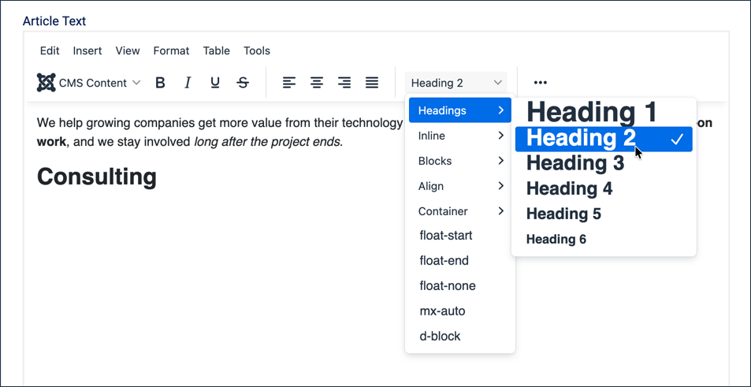
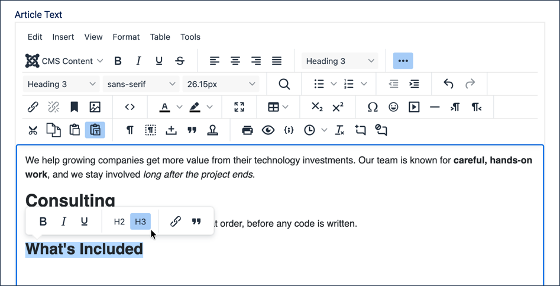
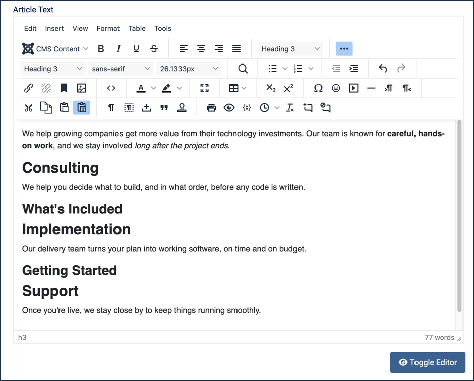
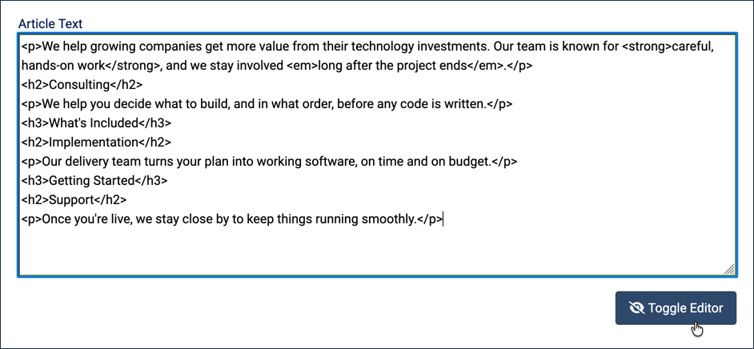

Headings create an organised outline of the content on a web page to create a visual and technical hierarchy that can be read by people, search engines, assistive technology, and more. Heading levels range from 1 to 6 (H1 to H6), with H1 being the most prominent and the others used as subheadings to create outlines that provide structure to a page.
In this tutorial we'll organise the Our Services article, started in 3.1, into its service lines using headings, preview our progress along the way, then view the underlying code.
3.1 Bold, Italic & More creates the Our Services article we'll add headings to in this tutorial.
Steps
Log in to Joomla backend and navigate to the Home Dashboard.
In the Administrator Menu, click Content > Articles.
Click Our Services to reopen it for editing.
Joomla will display the article title as a Heading 1 when the article is viewed.
Our article should only have a single Heading 1, so we will be working with Heading 2 and below.
Click at the end of the opening paragraph, then press Return to start a new line.
Extend the formatting dropdown (which will have Paragraph selected by default).
Note there are many formatting styles here, and that hovering over an option with an arrow opens a sub-menu.
Create our first heading by selecting the Heading 2 format.
From the formatting dropdown, hover over Headings and select Heading 2.
Type Consulting.

Selecting Heading 2 from the formatting dropdown
Press Return to move to a new line.
Note that the formatting dropdown has returned to Paragraph.
Type a short paragraph under Consulting: We help you decide what to build, and in what order, before any code is written.
Press Return, and create a sub-heading by applying formatting to existing text this time.
While still in the Paragraph format, type What's Included.
Highlight it. Result: A popup menu appears containing H2 and H3 icons.
Select H3 from this toolbar. Result: The formatting dropdown now displays Heading 3. We'll fill this section in with a list in the next tutorial.

Applying Heading 3 to What's Included from the popup toolbar
Press Return, set the format back to Heading 2 from the dropdown, and type Implementation.
Press Return, and type: Our delivery team turns your plan into working software, on time and on budget.
As in step 7, the format automatically returns to Paragraph after a heading — there's no need to set it manually.
Press Return, set the format to Heading 3, and type Getting Started. We'll fill this section in with a list too, in the next tutorial.
Press Return, set the format back to Heading 2, and type Support.
Press Return, and type: Once you're live, we stay close by to keep things running smoothly.

The complete outline, with two sub-headings still empty and ready for a list
Preview your progress. Click the Preview icon in the toolbar (the eye icon). Result: A popup shows a rough preview of the current editor content — no site styling applied, just the basic structure. This is handy for a quick check of your outline as you work. Close the popup when you're done.
Click the Preview button at the top of the page. Result: A fully-styled preview opens, showing the article exactly as visitors would see it. This preview reflects the last-saved version of the article, not what's currently in the editor, so it still shows only the opening paragraph from 3.1.
Close the preview, then click Save (not Save & Close) to save your progress without leaving the editor.
Click Preview again. Result: The preview now shows the complete outline, with all three headed sections.
Close the preview.
Click the blue Toggle Editor button below the text area. Result: The toolbar disappears and the article switches to No Editor mode, showing the raw HTML source directly — this is where you can see exactly how Joomla encoded your headings.

The article's raw HTML, with h2 and h3 tags marking each heading
Click Toggle Editor again to switch back to the normal editing view.
Click Save & Close. Result:Our Services now has an outline of three service sections, two of them with an empty sub-heading ready for a list. We'll fill those in next.
Concepts
An article should contain only one H1 heading, which is automatically set to the article title by Joomla. Advanced page structures can have more than one, but that is beyond the scope of this tutorial.
Headings are specific typographical elements, like titles, paragraphs, tables, and lists, and not just variations of font size and weight. Note the visual differences between heading levels — each one smaller than the last. The exact style can vary widely depending on your site template and customisations, but more importantly, the headings carry tags that enable screen readers, search engines, and other technology to read the structure of the document.
Always use heading elements when creating an outline structure for your article, and never use them simply to emphasise text.
Never skip heading levels; structure them in order with H3 headings below H2, H4 headings below H3, and so on. You can nest as many levels as your outline needs — the popup toolbar only offers H2 and H3, so for H4 and deeper you'll need the formatting dropdown.
The toolbar preview icon shows the current, unsaved content of the editor with no site styling — useful for a quick structural check as you work. The Preview button at the top of the page shows the last-saved version of the article with full site styling, so it won't reflect unsaved changes until you save.
No Editor mode shows the article's raw HTML source directly. It's useful for seeing exactly how Joomla encoded your content, or for making small manual edits to the markup.